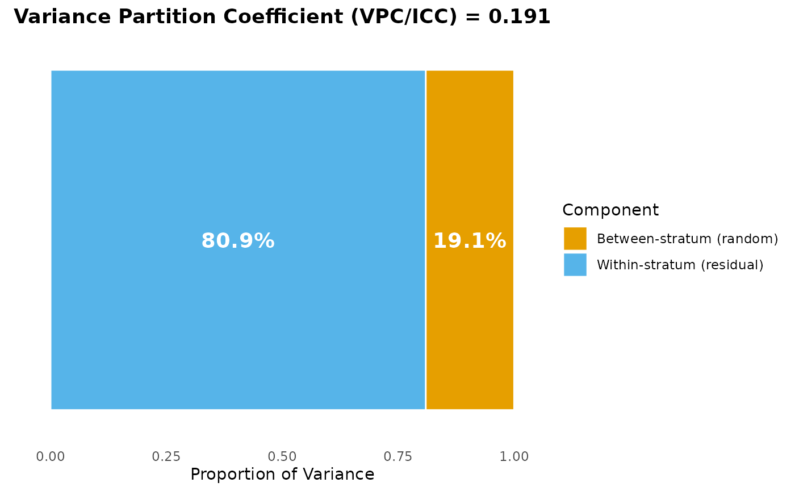
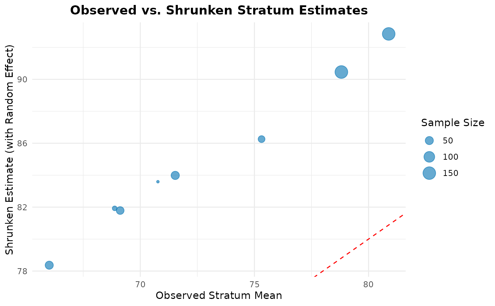
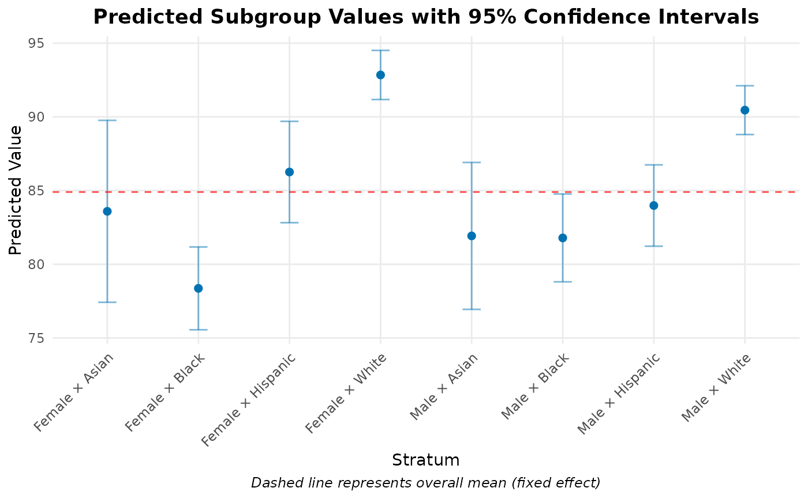
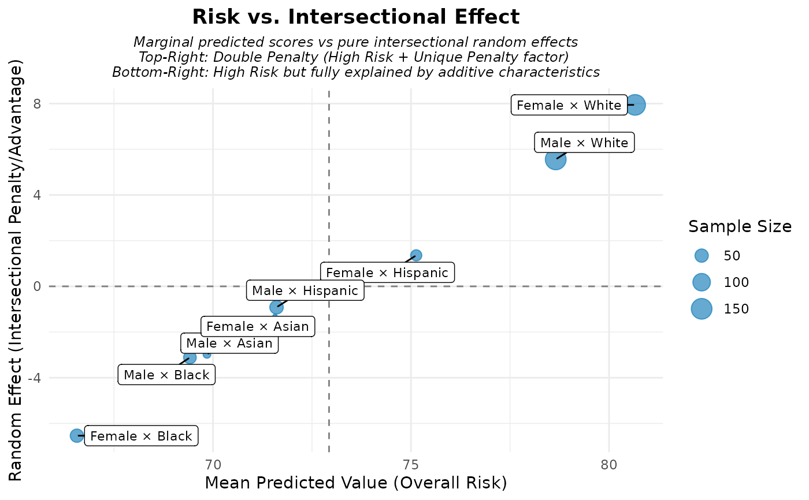
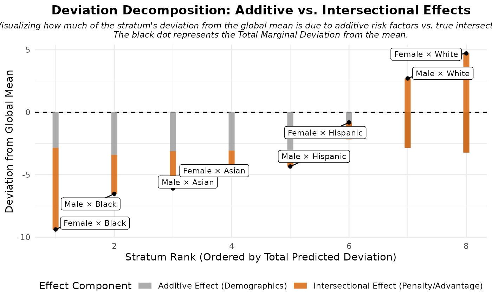
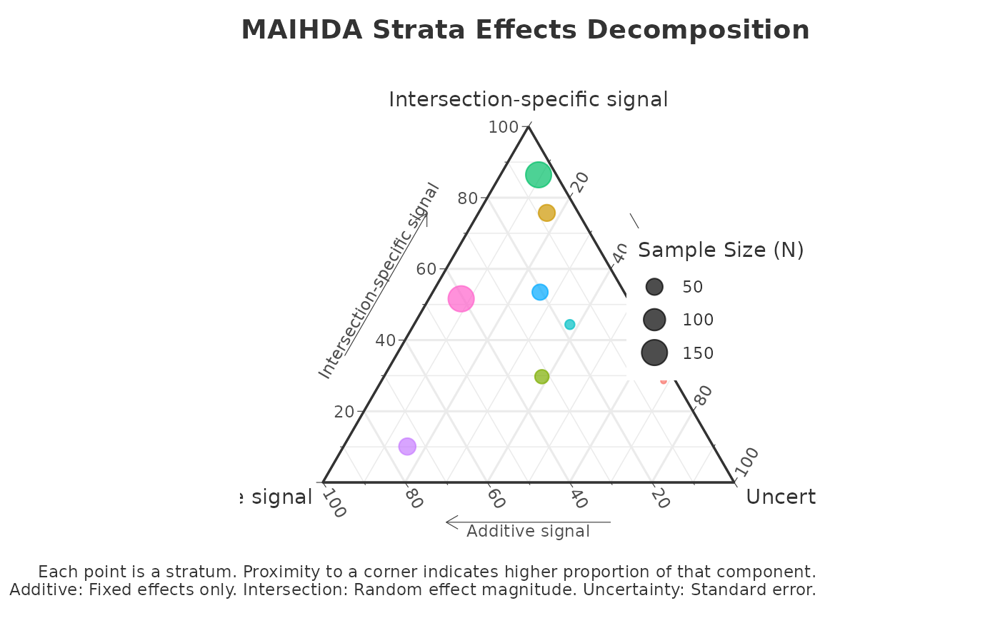
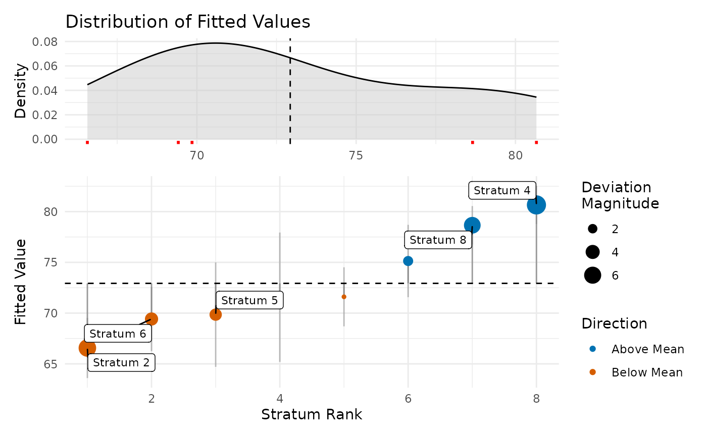

Creates various plots for visualizing MAIHDA model results including variance partition coefficient comparisons, observed vs. shrunken estimates, and predicted subgroup values with confidence intervals.
Arguments
- x
A maihda_model object from
fit_maihda().- type
Character string specifying plot type:
"vpc": Variance partition coefficient visualization
"obs_vs_shrunken": Observed vs. shrunken stratum means
"predicted": Predicted values for each stratum with confidence intervals
"risk_vs_effect": Quadrant scatterplot comparing overall risk to intersectional effect
"effect_decomp": Visualizes additive vs intersectional deviation from global mean
"ternary": Ternary plot analyzing the dimensional breakdown of variance
"prediction_deviation": Detailed deviation panels for individuals or strata
"all": Generate all available plots (default if not specified)
- summary_obj
Optional maihda_summary object from
summary(). If NULL, will be computed.- n_strata
Maximum number of strata to display in predicted plot. Default is 50. Use NULL for all strata.
- ...
Additional arguments (not currently used).
Examples
# \donttest{
strata_result <- make_strata(maihda_sim_data, vars = c("gender", "race"))
model <- fit_maihda(health_outcome ~ age + (1 | stratum), data = strata_result$data)
# VPC plot
plot(model, type = "vpc")
 # Generate all plots
plots <- plot(model)
# Generate all plots
plots <- plot(model)





#> Warning: Removing Layer 2 ('PositionNudge'), as it is not an approved position (for ternary plots) under the present ggtern package.


# }